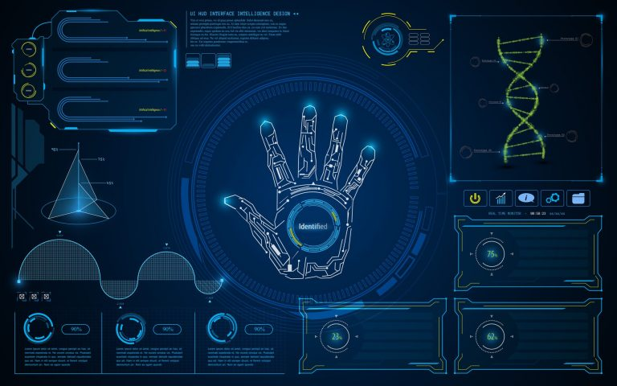

Teste de Turing
Entenda a lógica por trás do teste proposto pelo grande matemático e cientista da computação Alan Turing!
Consideremos a seguinte questão: as máquinas conseguem pensar?
É com essa instigante indagação que o matemático Alan Turing inicia o trabalho Computing Machinery and Intelligence (Máquinas Computacionais e Inteligência, em tradução livre), escrito por ele em 1950. Turing defende a criação de um teste hipotético para analisar se um sistema computacional é ou não inteligente como um ser humano, conhecido popularmente como Teste de Turing.
Mas, antes de tentar responder a esse pensamento mirabolante do pai da ciência da computação, vamos entender um jogo que o próprio Turing propõe — O Jogo da Imitação.
O Jogo da Imitação
- Jogador A, um homem;
- Jogador B, uma mulher;
- Jogador C, o interrogador, que pode ser de qualquer gênero.
Vamos agora aos objetivos:
- O interrogador ( C ) deve, por meio de perguntas, descobrir quem é o homem e quem é a mulher, já que não pode vê-los e não sabe quem é quem;
- O homem ( A ) deve tentar fingir que é a mulher, dando respostas falsas para enganar o interrogador;
- A mulher ( B ) deve dar respostas verdadeiras que indicam que ela é de fato a mulher, tentando assim ajudar o interrogador;

É preciso que a forma de comunicação utilizada não dê qualquer indicação de gênero (como o uso da voz). Pode ser utilizada, por exemplo, uma máquina de escrever para redigir as respostas.
Interessante, não? Um homem deve ser capaz de imitar o comportamento e as respostas de uma mulher, e o contrário também seria possível.
O Teste de Turing
Voltamos, então, ao Jogo da Imitação! Mudemos apenas alguns fatores:
- Jogador A é, agora, uma máquina, que deve convencer o interrogador de que é, na verdade, um humano;
- Jogador B é um ser humano qualquer, que deve ajudar o interrogador dando respostas verdadeiras;
- Jogador C, o interrogador, deve ainda descobrir quem é quem.
Temos, agora, o Teste de Turing: um teste capaz de concluir se um computador (jogador A) é inteligente. Conseguindo enganar o interrogador e convencê-lo de que é humana, a máquina poderia ser considerada inteligente.
Algumas limitações

O Teste de Turing pode parecer, à primeira vista, uma boa maneira de classificar máquinas como inteligentes ou não, mas na verdade é uma grande simplificação para o que se entende como Inteligência Artificial hoje em dia.
Antes de tudo, precisamos nos lembrar da pergunta que Turing tentou responder. O teste não conclui se máquinas podem pensar, mas sim se podem ser confundidas com pessoas, isto é, mimicar uma conversação humana.
Assim, a avaliação do teste depende quase que inteiramente das perguntas feitas ao computador dentro do período de tempo estipulado para tal (em seu trabalho, Turing nunca especificou um limite de tempo, mas com o advento dos chatbots foram criadas competições que tiveram de ser regulamentadas).
Além disso, se está avaliando a inteligência da máquina como sua capacidade de comunicar-se com seres humanos como se fosse um deles, apenas. No entanto, o estudo de inteligência artificial não se resume e não se limita ao processamento de linguagem natural: existe o processamento de imagens, vídeos, sons, e até aprendizado por reforço — áreas de estudo também muito importantes e que permitem resultados muito impressionantes.
Por exemplo, é mais inteligente um programa que é capaz de conversar com um humano naturalmente ou um que consegue vencer o campeão mundial de xadrez, resultado este alcançado com aprendizado por reforço?
referência
Rodrigo Magaldi. Turing Talks Inteligência Artificial para todos medium.com. Acesso em 02 de junho de 2020.